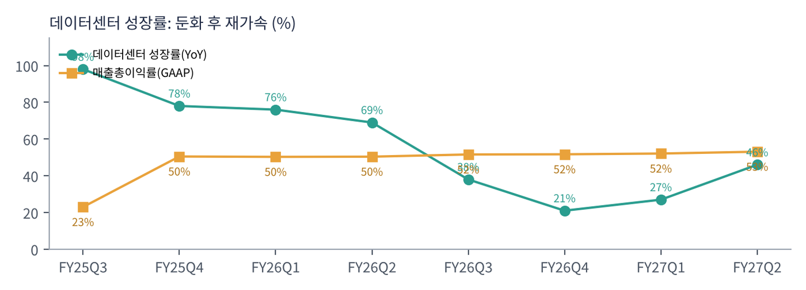

마벨은 데이터가 오가는 길을 만드는 반도체 회사다. 데이터센터 안에서 서버와 서버, 칩과 칩을 잇는 광통신용 DSP·스위치 칩, 그리고 구글·아마존·마이크로소프트 같은 고객이 원하는 대로 설계해 주는 맞춤형 AI 칩(XPU)이 핵심이다.
| 항목 | 내용 |
|---|---|
| 종목 | Marvell Technology, Inc. (MRVL) · 반도체 · 1995년 설립 · 본사 캘리포니아주 산타클라라 |
| 경영진 | 맷 머피 회장 겸 CEO / 댄 던 CFO |
| 시가총액 | 약 $123.8B (11/6 종가 기준) · 희석 주식 수 약 9.2억 주 |
| 최근 분기(FY27Q2) | 매출 $2.74B(+37%), GAAP 영업이익 $460M, GAAP 순이익 $308M, 비GAAP 순이익 $866M |
| 밸류에이션 | TTM PER 56.4배(GAAP). FY28 가이던스 매출 $18B 기준 주가매출비율 약 7배 |
| 주요 주주 이벤트 | 2026.3.31 엔비디아에 시리즈 A 전환우선주 발행($2B 투자). 2026.11.2 루멘텀 인수 발표 |
| 분기 (종료월) | 매출 | YoY | GAAP 매출총이익률 | GAAP 영업이익 | GAAP 순이익 | 데이터센터 | DC YoY | 영업현금흐름 |
|---|---|---|---|---|---|---|---|---|
| FY25Q3 (24.10) | $1.52B | +7% | 23.0% | -$703M | -$676M | $1.10B | +98% | $536M |
| FY25Q4 (25.1) | $1.82B | +27% | 50.5% | $235M | $200M | $1.37B | +78% | $514M |
| FY26Q1 (25.4) | $1.90B | +63% | 50.3% | $271M | $178M | $1.44B | +76% | $333M |
| FY26Q2 (25.7) | $2.01B | +58% | 50.4% | $290M | $195M | $1.49B | +69% | $462M |
| FY26Q3 (25.10) | $2.07B | +37% | 51.6% | $358M | $1,901M | $1.52B | +38% | $582M |
| FY26Q4 (26.1) | $2.22B | +22% | 51.7% | $404M | $396M | $1.65B | +21% | $374M |
| FY27Q1 (26.4) | $2.42B | +28% | 52.1% | $339M | $35M | $1.83B | +27% | $639M |
| FY27Q2 (26.7) | $2.74B | +37% | 53.1% | $460M | $308M | $2.17B | +46% | $606M |

성장 곡선이 'U자'를 그렸다. 데이터센터 성장률은 FY25Q3 +98%에서 FY26Q4 +21%까지 1년 내내 둔화했다. 기존 맞춤형 칩 세대의 물량이 정점을 지나고 다음 세대 프로그램이 아직 매출로 잡히지 않은 '공백기'로 해석된다. FY27 들어 +27% → +46%로 다시 빨라졌고, 회사는 3분기 데이터센터 매출이 전년 대비 약 75% 늘 것이라고 밝혔다(언론 보도 기준). 같은 기간 주가가 $70대(2월)에서 $330(6월)까지 오른 이유가 이 재가속 기대였다.
GAAP 숫자는 일회성 항목으로 크게 흔들린다. FY25Q3의 대규모 적자(-$676M)는 제품 라인 정리에 따른 재고·자산 손상 등 일회성 비용 때문이고, FY26Q3 순이익 $1.9B는 차량용 이더넷 사업을 인피니언에 판 매각 이익이다. FY27Q1 순이익이 $35M으로 줄어든 것도 일회성 비용 영향이다. 인수한 기업들의 무형자산 상각과 주식보상비용이 커서 GAAP과 비GAAP의 차이가 크다(FY27Q2 순이익 $308M vs $866M). 회사의 실제 수익력은 비GAAP 영업이익률(목표 38~40%)로 보는 것이 일반적이다.


현금흐름은 안정적이지만 크지 않다. 분기 영업현금흐름 $0.3~0.6B, 설비투자 $0.05~0.16B다. 팹이 없는 설계 회사여서 설비투자 부담은 작다. 다만 매출 대비 현금 창출력은 엔비디아(분기 FCF $21B)와 비교할 수 없는 규모여서, $115B짜리 루멘텀 인수를 현금이 아닌 주식으로 할 수밖에 없었다.
| 항목 | 내용 | 출처 |
|---|---|---|
| FY27Q3 매출 | $3.15B ±5% (전년 대비 +52%) | 실적 발표문 |
| FY27Q3 비GAAP 매출총이익률 | 57.5~58.5% (2분기 58.9%에서 하락 — 맞춤형 칩 비중 확대) | 실적 발표문 |
| FY27Q3 EPS | 비GAAP $1.10 ±$0.05 / GAAP $0.53 ±$0.05 | 실적 발표문 |
| FY27 연간 매출 | 약 $12B (+45%) | 컨퍼런스콜 (보도) |
| FY28 연간 매출 | 약 $18B (+50%), 데이터센터 +60% 이상 | 컨퍼런스콜 (보도) |
| 영업이익률 목표 | 비GAAP 38~40%를 FY27Q4에 달성, FY28에 상단 | 컨퍼런스콜 (보도) |
트레이딩뷰 MRVL 일봉 300개(2025.8 ~ 2026.11.6)와 주봉으로 계산했다. 결론부터 말하면 1년 동안 4배 오른 주식이 5개월 만에 상승분의 3분의 2를 반납했다. 단기·중기 추세는 하락이고, 장기(12개월) 모멘텀만 플러스로 남았다.


위: 주봉 재구성 차트. 아래: 트레이딩뷰 일봉 캡처(작도 없이 이동평균선·볼린저밴드만 표시).
| 이동평균 | 값 | 종가 대비 | 해석 |
|---|---|---|---|
| 5일선 | $155.6 | -9.3% | 11/2 인수 발표 후 급락 반영 |
| 20일선 | $217.2 | -35.0% | 주가와의 괴리가 극단적 — 과매도 |
| 50일선 | $234.3 | -39.7% | 10월까지 지지선 역할, 이제 먼 저항 |
| 100일선 | $232.2 | -39.2% | 50일선과 겹침 — $217~234 거대한 매물대 |
| 200일선 | $185.1 | -23.7% | 11월 첫 주 이탈. 아직 우상향 중 |
배열은 50일 > 100일 > 20일 > 200일 > 주가다. 주봉으로 보면 하락은 세 단계였다. ① 10월 둘째 주 $275 → $228(-17%, 반도체 차익실현), ② 10/28 루멘텀 인수 협상 보도로 시간외 -10%, ③ 11/2 인수 확정 후 한 주 $192 → $141(-28%). 거래량이 20일 평균의 121%로 늘어 단순한 조정이 아니라 투매에 가까웠다.
| 규칙 | 기준 | 현재 값 | 신호 |
|---|---|---|---|
| 장기 추세 필터 | 종가 vs 200일선 | $141.2 < $185.1 | 매도 |
| 중장기 교차 | 50일선 vs 200일선 | $234.3 > $185.1 | 매수 |
| 단기 교차 | 20일선 vs 50일선 | $217.2 < $234.3 | 매도 |
| 돈키언 채널 | 55일 고가·저가 | 11/5 $132.5로 55일 최저가 | 매도 |
| 1개월 모멘텀 | 21거래일 수익률 | -48.6% (기준 $274.7) | 매도 |
| 3개월 모멘텀 | 63거래일 수익률 | -32.3% (기준 $208.6) | 매도 |
| 6개월 모멘텀 | 126거래일 수익률 | -17.0% (기준 $170.1) | 매도 |
| 12개월 모멘텀 | 252거래일 수익률 | +52.0% (기준 $92.9) | 매수 |
| 종합 (8개 평균) | -0.50 | 매도 | |
해석: 1개월 수익률 -49%는 추세추종 관점에서 극단적인 숫자다. 이 정도 급락 뒤에는 기계적 매도가 대부분 끝났을 가능성도 있다. 그러나 남은 두 매수 신호(50/200일 교차, 12개월 모멘텀)도 시간이 지나면 약해진다. 50일선이 빠르게 내려오고 있고, 12개월 기준 가격은 2026년 초 $80~90대에서 3월 이후 $100~170대로 올라간다. 4~5월이 되면 12개월 모멘텀도 매도로 바뀔 수 있다.
| 가격 | 무엇이 바뀌나 | 의미 |
|---|---|---|
| $170 | 6개월 모멘텀 기준($170.1) | 회복 시 매도 신호 하나 감소(-0.50 → -0.25) |
| $185 | 200일선 | 장기 추세 필터 매수 전환 — 추세 복귀 최소 조건 |
| $209 | 3개월 모멘텀 기준 | 종합 점수 플러스 전환 구간 |
| $132.5 이탈 | 55일·52주 이후 신저가 경신 | 돈키언 매도 유지, 추가 하락 신호 |
| 구분 | 가격대 | 근거 |
|---|---|---|
| 저항 2 | $217 ~ 234 | 20·50·100일선 밀집 |
| 저항 1 | $185 ~ 192 | 200일선, 11/2 주 시가 $192(갭 상단) |
| 지지 1 | $126 ~ 133 | 11/5 저가 $132.5 + 2월 저점→6월 고점 피보나치 78.6% $126.1 |
| 지지 2 | $100 ~ 110 | 4월 돌파 구간(4/6 주 $106~130) |
기본 판단: '실적 기대'와 '인수 희석' 사이의 줄다리기다. 실적만 보면 가이던스가 계속 올라가고 있어 지금 주가는 FY28 매출의 7배로 1년 사이 가장 싸다. 하지만 시장은 33%의 지분 희석과 $115B짜리 통합의 실행 위험을 먼저 가격에 반영했다. 12월 초 FY27Q3 실적이 가이던스($3.15B)와 데이터센터 +75%를 확인해 주면 반등의 명분이 생긴다. 그 전에는 지지 구간 분할 매수 외에는 관망이 낫다.
| 가격대 | 시나리오 | 대응 |
|---|---|---|
| $209 이상 | 추세 복귀 | 잔여 추세 추종 |
| $185 종가 회복 | 장기 추세 필터 매수 전환 | 2차 익절 + 추세 매수 추가 |
| $126 ~ 141 | 과매도 지지 테스트 | 분할 매수 50% |
| $118 이하 종가 | 지지 붕괴 | 손절 |
| $100 ~ 110 | 4월 돌파 구간 | 관망, 바닥 확인 후 재검토 |
마벨은 FY27부터 매출을 데이터센터와 통신·기타 두 개로만 공개한다. 차량용 이더넷을 인피니언에 팔면서 자동차 비중이 줄었고, 데이터센터가 79%로 회사 대부분이 됐기 때문이다.

| 매출원 | 돈을 버는 방식 | FY27Q2 | 성장 |
|---|---|---|---|
| 데이터센터 — 맞춤형 칩 | 하이퍼스케일러가 직접 쓰는 AI 가속기(XPU)와 그 주변 칩(XPU 어태치: 메모리·스토리지·네트워크 컨트롤러)을 대신 설계·양산. 설계 용역(NRE) + 양산 매출 | $2.17B | +46% |
| 데이터센터 — 연결(인터커넥트) | 800G·1.6T 광트랜시버 안의 PAM4 DSP, 랙 안 구리 케이블용 AEC 칩, 데이터센터 간 연결(DCI). AI 클러스터가 커질수록 칩 수가 기하급수로 늘어나는 구조 | ||
| 데이터센터 — 스위치·스토리지 | 테라링크스 이더넷 스위치, SSD·HDD 컨트롤러 | ||
| 통신·기타 | 기업 네트워크, 통신사 장비(5G·광대역), 소비자, 산업용 | $0.57B | +10% |
마벨 매출의 핵심 변수는 '맞춤형 칩 프로그램 몇 개가 언제 양산에 들어가느냐'다. 연결 칩은 AI 투자에 비례해 꾸준히 늘지만, 맞춤형 칩은 고객 한 곳의 세대 교체에 따라 분기 매출이 크게 출렁인다. FY26의 성장 둔화가 그 예다. 회사가 FY27 하반기부터의 '맞춤형 칩 가속'을 반복해서 강조하는 이유다. 반대로 맞춤형 칩은 마진이 낮다. 3분기 매출총이익률 가이던스가 2분기보다 낮아진 것은 이 비중이 늘기 때문이다.
마벨은 스스로를 "데이터 인프라 반도체 솔루션의 리더"라고 소개한다. 루멘텀 인수 발표문에서 머피 CEO가 밝힌 목표는 더 분명하다. AI 인프라에서 전기와 광을 하나로 설계(co-design)하는 '연결의 카테고리 리더'가 되는 것이다.
| 전환의 논리 | 발표문의 설명 |
|---|---|
| 구리의 한계 | 대역폭 요구가 급증하고 구리 연결의 물리적 한계가 드러나면서 광 기술로의 전환이 빨라지고 있다 |
| 스케일업·스케일인 | AI 인프라가 랙 안(스케일업), 칩 안(스케일인)까지 광으로 연결되면 부품을 따로 사서 조립하는 방식으로는 안 되고, 전기·광을 처음부터 함께 설계해야 한다 |
| 각자의 강점 | 마벨: 전기·광 인터커넥트, 스위칭, 맞춤형 XPU, 첨단 공정·패키징 / 루멘텀: 고성능 레이저, 광트랜시버, 광회로 스위치(OCS), 화합물 반도체 제조 |
| 목표 시장 | 합병 회사의 목표 시장(TAM) $550B, 연간 비용 시너지 $1B 이상, 인수 1년 차부터 비GAAP EPS 증가 |
루멘텀의 마이클 헐스턴 CEO는 직원들에게 "광학 제품의 블록 다이어그램을 보면 루멘텀이 핵심 부품을, 마벨이 똑같이 필수적인 부품을 갖고 있다"고 썼다. 두 회사를 합치면 광 모듈 하나를 통째로 설계·생산할 수 있다는 뜻이다. 엔비디아가 'AI 팩토리 전체'를 노린다면, 마벨은 그 공장 안의 '신경망(연결)' 전체를 노리는 셈이다.
또 하나의 축은 맞춤형 칩이다. 2025년 6월부터 머피 CEO는 FY29 맞춤형 칩 매출 $10B 이상을 목표로 제시해 왔다. 2026년 7월에는 대형 하이퍼스케일러와 가속기·스토리지·NIC·메모리 컨트롤러를 아우르는 맞춤형 칩 계약을 맺었다. 회사는 고객명을 밝히지 않았지만 언론은 구글로 보도했고, 이정표 달성 시 6년간 누적 $120B 규모라고 전했다. 10월 6일 투자자의 날에서는 FY31 매출 목표 $70~90B를 제시했다고 보도됐다.
| 주제 | 회사의 말 | 읽는 법 |
|---|---|---|
| 수주 | "AI 관련 수주는 여전히 매우 강하다. FY27 남은 기간 매출 성장이 더 빨라질 것으로 예상한다" (FY27Q2 발표문) | 3분기 가이던스 +52%로 확인 |
| 가이던스 상향 | "FY27과 FY28 매출 전망을 지난 분기보다 다시 올린다" | FY28 $16.5B → $18B |
| 성장 동력 | 연결(커넥티비티) 수요 강세, FY27 하반기부터 맞춤형 칩의 의미 있는 가속 | 1.6T 광 DSP 램프업 |
| 장기 기회 | 신규 하이퍼스케일러 프로그램은 FY28 목표에 일부 반영, 큰 효과는 FY29 이후 (콜, 보도) | 2027~2028년 매출 가시성↑ |
| 마진 | FY28 매출총이익률은 FY27 하반기 수준 유지, 영업비용은 매출 성장의 절반 속도 (콜, 보도) | 이익 레버리지 |
마벨의 수요 코멘트는 다른 AI 반도체 회사들과 같은 방향을 가리킨다. 엔비디아는 다음 분기 $108B, 메모리 3사는 2028~2030년까지 공급 부족을 말한다. 마벨의 특징은 수요의 원천이 GPU가 아니라 하이퍼스케일러 자체 칩과 광 연결이라는 점이다. 빅테크가 엔비디아 의존도를 낮추려 할수록 마벨에게는 기회가 커진다.
아마존(트레이니엄), 마이크로소프트(마이아), 그리고 신규 대형 하이퍼스케일러 프로그램. 고객 한두 곳의 세대 교체에 매출이 크게 흔들리는 구조이며, 경쟁자는 브로드컴(구글 TPU 주력 파트너)이다. FY28 2배 이상 성장, FY29 크게 가속이 회사 목표다.
마벨의 '캐시카우'에 가까운 사업. 광트랜시버 안의 DSP 시장 점유율이 높고, AI 클러스터의 GPU 수가 늘수록 광 링크 수는 더 빨리 늘어난다. 루멘텀 인수로 레이저·트랜시버·광회로 스위치까지 수직 통합한다.
기업 네트워크와 통신사 장비. 2024~2025년 재고 조정을 마치고 회복 중이지만 비중 21%로 주가에 미치는 영향은 작다.
엔비디아 $2B 전환우선주(2026.3), 루멘텀 주식 교환(지분 33% 희석). 현금 창출력이 작아 인수를 주식으로 하는 구조이며, 주가 하락은 거래의 실질 가치도 낮춘다(발표 당시 루멘텀 1주 $1,132 → 11/6 마벨 종가 기준 약 $635).
| 경쟁/리스크 | 내용 | 강도 |
|---|---|---|
| 인수 실행 | $115B 규모, 12~18개월 마감, 양사 주주 승인·각국 규제 승인 필요. 통합 기간 경영진 집중력 분산 | 높음 |
| 희석 | 기존 주주 지분 67%로 축소. 루멘텀 실적이 기대에 못 미치면 EPS 증가 약속이 흔들림 | 높음 |
| 고객 집중 | 맞춤형 칩 매출이 소수 하이퍼스케일러에 몰림. 한 곳의 세대 전환 지연이 분기 실적을 좌우 | 중간~높음 |
| 브로드컴 | 맞춤형 AI 칩 1위. 같은 고객을 두고 경쟁 | 중간 |
| 마진 희석 | 맞춤형 칩 비중 확대 → 매출총이익률 하락 압력 | 중간 |
| 변동성 | 14일 ATR 13%, 베타 2 이상. 반도체 업종 급락 때 낙폭이 가장 큼 | 참고 |
12월 초 FY27Q3 실적(매출 $3.15B, 데이터센터 약 +75%)과 루멘텀 거래에 대한 주주 반응이 주가를 정한다. 실적이 좋아도 인수 희석 부담이 남아 있어 200일선($185) 회복까지는 시간이 걸릴 수 있다.
계획대로라면 FY28 매출 $18B에 루멘텀이 더해져 'AI 연결'에서 엔비디아·브로드컴과 나란히 서는 회사가 된다. 성패는 맞춤형 칩 프로그램의 양산 일정과 광·전기 통합의 실제 시너지에 달렸다.